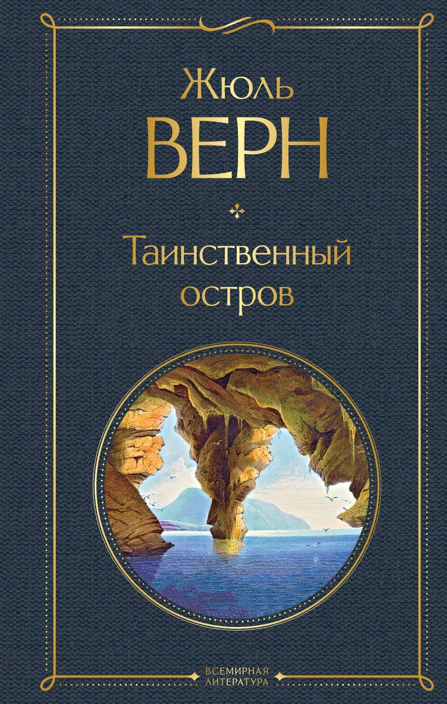

Таинственный остров
Жюль Верн
Таинственный остров
«Таинственный остров» — книга, которую стоит взять с собой на необитаемый остров. Один из самых увлекательных романов Жюля Верна — захватывающая история приключений островитян, «пособие по выживанию» и гимн человеческой силе воли и отваге. В авантюрный сюжет романа вплетены буря, извержение вулкана, нападение пиратов, таинственный капитан Немо и история о выживании на клочке земли. Прочитав эту книгу, можно научиться варить мыло, делать динамит, батарею Беккереля и многое другое! С первых же страниц автор перенесет вас на край земли. Таинственный остров ждет вас! Вперед, навстречу приключениям!
«Таинственный остров» — книга, которую стоит взять с собой на необитаемый остров. Один из самых увлекательных романов Жюля Верна — захватывающая история приключений островитян, «пособие по выживанию» и гимн человеческой силе воли и отваге. В авантюрный сюжет романа вплетены буря, извержение вулкана, нападение пиратов, таинственный капитан Немо и история о выживании на клочке земли. Прочитав эту книгу, можно научиться варить мыло, делать динамит, батарею Беккереля и многое другое! С первых же страниц автор перенесет вас на край земли. Таинственный остров ждет вас! Вперед, навстречу приключениям!